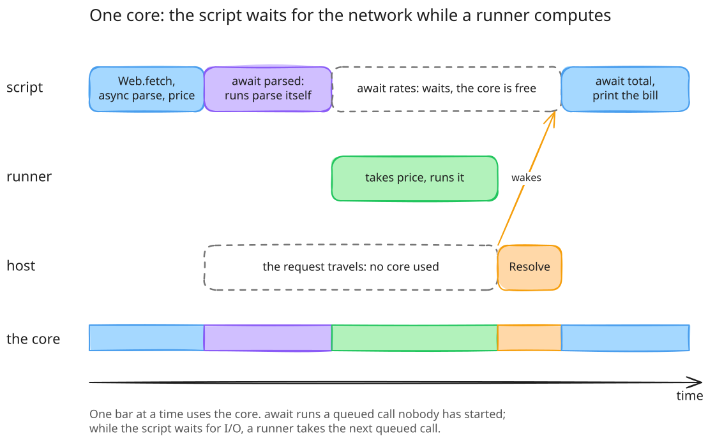
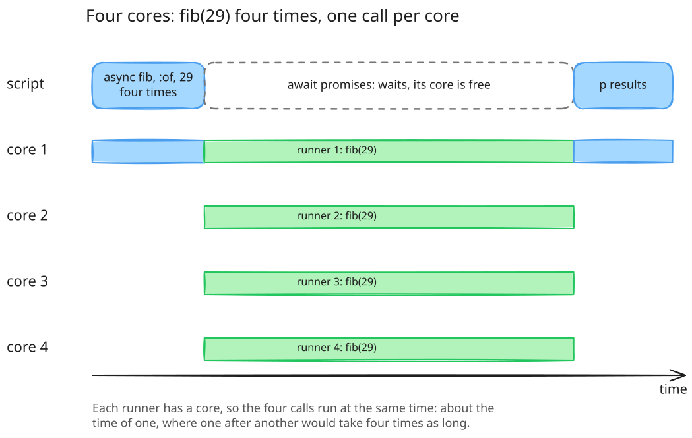
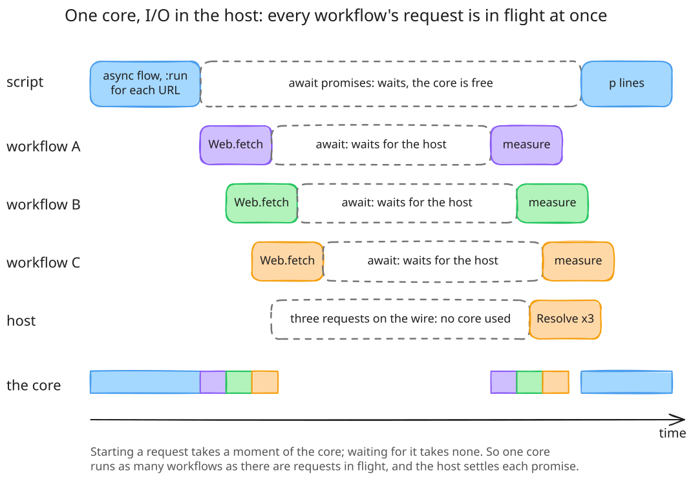

async, await and promises
A cameo script hands a method call to a worker with
async and collects its result with await. What
async returns is a promise, a plain Integer: a name
for a result to come, which a worker, the script itself or the Go host
settles. This page explains the model, shows it on one core, walks through
the examples in examples/async,
and shows the same scripts running on Ruby.
How it works
Concurrency comes from the Cameo module, which brings
async, await, promise,
resolve and fail. The class that runs the work
includes Cameo::Runner, the same module under the name a Ruby
program includes too; see below. A script may instead
include Cameo at the top level, which brings the module to
every method, but only cameo has that; Cameo::Runner at the
top level is refused on both. Cameo.async and
Cameo.await need no include.
async receiver, :method, args…- queues one call of a method on a receiver, over copies of the receiver and the arguments, and returns its promise at once. The call runs on a worker: an interpreter of its own, on a goroutine Go schedules over the cores. Nothing the call does reaches the caller's values, and its result comes back as a copy. A Proc, a class or a block cannot be passed, since they cannot be copied.
await promise- waits for the promise and returns its result, or raises the exception
the call raised, with the same class and message. Awaiting a promise
twice gives the same result.
await [a, b]waits for each and returns the results in order; when some failed it waits for all, then raises the first failure in the list's order.await :allwaits for every call the current method started and has not awaited, blocks included, in start order.await receiver, :method, args…starts a call and waits for it in one step. promise,resolve promise, value,fail promise, exception- make a pending promise, and settle it with a value or an exception,
once; settling it again raises. A promise is an Integer, so it travels to
a worker, which may settle it, and to the Go host, which settles the
promises its methods return when their I/O is done; see
promises in the host.
failwith anything but a promise first raises, as Ruby'sfaildoes.
The calls async queues are taken by runners, up to
one per core, started as calls arrive and ended when the queue is empty.
Two rules keep every call able to run: a script about to wait for a promise
while calls are queued starts another runner, and await on a
call nobody has taken runs that call itself, on the goroutine that awaits
it. A run ends when the script's top level has and every call it started
has; a call that failed and was never awaited is reported on standard
error.
On one core
With one core, async cannot make calls that compute run
faster: one of them has the core at a time. What it buys is overlap with
waiting. The timeline below is a script that asks the host for exchange
rates with Web.fetch, which returns a promise and starts the
request on a goroutine, and queues two calls of its own, parse
and price.

- The script calls
Web.fetch, which returns at once, and queuesparseandpricewithasync. The request is on its way; no core is needed for that. - The script awaits
parse. Nobody has taken it, so the script runs it itself rather than waiting for a runner. - The script awaits the rates. It has nothing to do, so the core is
free, and a runner takes
price, the next call in the queue. - The response arrives. The host settles the promise with
Resolve, which wakes the script. - The script awaits
price, which is done, and prints the bill.
Computing on every core
With more cores, calls that compute run at the same time. Each queued
call is taken by a runner of its own, up to one per core, and Go spreads
the runners over the cores. The Fibonacci
fan-out queues four calls of fib(29) and awaits the list
of their promises:

On a four-core machine the four calls take 1.2 seconds where running
them one after another takes 2.3: about a 2× gain, not 4×,
since the runners share the memory system and the collector. The same
script on one core takes as long as the sequential one, as the
timeline above shows: there, async
buys overlap with waiting, not more computing.
Many workflows, I/O in the host
The other shape of work is many workflows that each wait on the
outside: fetch a page, then measure it. Waiting costs no core, so one core
runs as many workflows at once as there are requests in flight. The host
does the I/O: its Web.fetch starts the request on a goroutine
of its own and returns a promise, and when the response is in, the host
settles the promise from outside the script with
Resolve or Fail, which wakes the workflow that
awaits it. examples/webfetch
is that program; promises in the host shows
its Go side.
include Cameo
class Flow
# One workflow: fetch the page, then measure it. await parks this
# workflow until the host settles the promise; the others run meanwhile.
def run(url)
page = await Web.fetch(url)
"#{url}: #{page.size} bytes, #{page.lines.size} lines"
rescue Web::FetchError => e
"#{url}: #{e.message}"
end
end
def fetch_all(urls)
flow = Flow.new
promises = urls.map { |url| async flow, :run, url } # every workflow starts now
await promises # their lines, in order
end
Three workflows start, each calls Web.fetch and awaits the
promise; while all three wait, the core is idle and the three requests are
on the wire together. The host's goroutines settle the three promises as
the responses arrive, each workflow measures its page, and
await promises at the top returns the three lines. The test of
examples/webfetch holds the program to this: its server
answers a request only once all of them have arrived, so the run finishes
only if every workflow's fetch was in flight at once.
The examples
Each script below is a file in examples/async, with the
output it prints. The scripts start with require "cameo/runner",
which cameo builds in, and the class that runs the work includes
Cameo::Runner, so that the same file runs on Ruby; see
the next section.
one call
async starts one method call on a worker and returns its promise, an Integer, at once; await waits for the call and returns its result. A class includes Cameo::Runner to run its work so.
require "cameo/runner"
class Calculator
include Cameo::Runner
def square(n)
n * n
end
def demo
job = async self, :square, 12
puts "the promise: #{job}"
puts "its result: #{await job}"
# async and await in one step: start the call and wait for it.
puts "in one step: #{await self, :square, 7}"
end
end
Calculator.new.demothe promise: 1
its result: 144
in one step: 49fan out
Fan out: start every call before awaiting any, then await the list of promises, which returns the results in the order of the list.
require "cameo/runner"
class Words
include Cameo::Runner
def count(text)
text.split.size
end
def count_all(pages)
promises = pages.map { |page| async self, :count, page }
await promises
end
end
pages = [
"the quick brown fox",
"jumps over",
"the lazy dog and keeps on running"
]
counts = Words.new.count_all(pages)
puts counts.inspect
puts "#{counts.sum} words on #{pages.size} pages"[4, 2, 7]
13 words on 3 pagesawait all
await :all waits for every call the current method started and has not awaited, blocks included, and returns their results in start order.
require "cameo/runner"
class Squares
include Cameo::Runner
def of(n)
n * n
end
def table(limit)
(1..limit).each { |n| async self, :of, n }
await :all
end
# The calls a method started belong to that method: here only the two
# started in pair are collected, not table's.
def pair
async self, :of, 10
async self, :of, 20
await :all
end
end
squares = Squares.new
puts squares.table(5).inspect
puts squares.pair.inspect[1, 4, 9, 16, 25]
[100, 400]failures
A call that raises raises again where it is awaited, with the same class and message. Awaiting a list waits for every call, then raises the first failure in the list's order.
require "cameo/runner"
class Inventory
include Cameo::Runner
def reserve(item, qty)
raise ArgumentError, "no #{item} left" if qty > 3
"#{qty} x #{item}"
end
def demo
begin
await self, :reserve, "lamps", 5
rescue ArgumentError => e
puts "raised: #{e.message}"
end
orders = [["books", 1], ["chairs", 9], ["pens", 2], ["desks", 4]]
promises = orders.map { |item, qty| async self, :reserve, item, qty }
begin
await promises
rescue ArgumentError => e
puts "the list raised: #{e.message}"
end
# The calls that worked still have their results.
puts await(promises[0]), await(promises[2])
end
end
Inventory.new.demoraised: no lamps left
the list raised: no chairs left
1 x books
2 x penspromises
A promise made by hand: promise makes one, and resolve or fail settles it, once. A promise is an Integer, so it travels to a worker like any other value, and the worker settles it while the caller awaits it.
require "cameo/runner"
class Courier
include Cameo::Runner
def deliver(promise, parcel)
resolve(promise, "#{parcel}, delivered")
end
def lose(promise, parcel)
fail(promise, KeyError, "#{parcel} is lost")
end
def demo
parcel = promise
async self, :deliver, parcel, "books"
puts await(parcel)
missing = promise
async self, :lose, missing, "a lamp"
begin
await missing
rescue KeyError => e
puts "failed: #{e.message}"
end
begin
resolve parcel, "again"
rescue ArgumentError => e
puts e.message
end
# fail with anything but a promise first raises, as Ruby's fail does.
begin
fail "not a promise"
rescue RuntimeError => e
puts "raised: #{e.message}"
end
end
end
Courier.new.demobooks, delivered
failed: a lamp is lost
promise 1 is settled already
raised: not a promiseworkflow
A workflow of steps that depend on each other. Checking the order and pricing its lines run at once; shipping waits for both, and its label is made while the parcel is weighed.
require "cameo/runner"
class Shop
include Cameo::Runner
def check(order)
order["lines"].all? { |line| line["qty"].positive? }
end
def price(line)
line["qty"] * line["cents"]
end
def weigh(order)
order["lines"].sum { |line| line["qty"] * line["grams"] }
end
def label(order)
"#{order["id"]} to #{order["to"]}"
end
def ship(order)
checked = async self, :check, order
prices = order["lines"].map { |line| async self, :price, line }
raise ArgumentError, "order #{order["id"]} has an empty line" unless await checked
total = await(prices).sum
weight = async self, :weigh, order
label = async self, :label, order
"#{await label}: #{total} cents, #{await weight} g"
end
end
order = {
"id" => "A-17", "to" => "Berlin",
"lines" => [
{ "qty" => 2, "cents" => 1250, "grams" => 300 },
{ "qty" => 1, "cents" => 4999, "grams" => 1200 }
]
}
puts Shop.new.ship(order)A-17 to Berlin: 7499 cents, 1800 gcopies
A call that async starts gets copies of its receiver and its arguments, and its result comes back as a copy: nothing a worker does reaches the caller's values. A Proc or a class cannot be copied, so it cannot be passed.
require "cameo/runner"
class Editor
include Cameo::Runner
def append(list, item)
list << item
list
end
def demo
list = [1, 2]
longer = await self, :append, list, 3
puts "the worker's: #{longer.inspect}, the caller's: #{list.inspect}"
begin
async self, :append, list, -> { 4 }
rescue TypeError => e
puts e.message
end
end
end
Editor.new.demothe worker's: [1, 2, 3], the caller's: [1, 2]
a Proc cannot be passed to asynctop level
Cameo::Runner belongs in the class that runs the work. The top level refuses it, on cameo and on Ruby alike; a script that wants async at the top level includes Cameo, which only cameo has.
require "cameo/runner"
begin
include Cameo::Runner
rescue StandardError => e
puts "refused: #{e.message}"
endrefused: include Cameo::Runner belongs in the class that runs the work; at the top level include CameoThe same script on Ruby
ruby/lib/cameo/runner.rb
gives CRuby the Cameo::Runner module: async,
await, promise, resolve and
fail with cameo's results, promise ids and error messages. A
script whose classes include it runs unchanged on both:
$ cameo examples/async/02_fan_out.rb
[4, 2, 7]
13 words on 3 pages
$ ruby -I ruby/lib examples/async/02_fan_out.rb
[4, 2, 7]
13 words on 3 pagesOn Ruby, async copies the receiver and the arguments with
Marshal, as cameo copies them, and runs the call on a thread
of its own; a Proc, a Method, a class or a module cannot be copied, as in
cameo. The result comes back as a copy, and a failure raises again where
the call is awaited. await :all collects the calls the current
method started, which the library tells from the caller's location.
What differs is the cores. CRuby's global VM lock runs one thread's Ruby code at a time, so calls that compute take turns on one core, as in the timeline above, where cameo spreads them over the cores. A call that waits, for the network or a sleep, lets the others run on both. The library is for running a cameo script where cameo is not embedded; it does not make Ruby parallel.